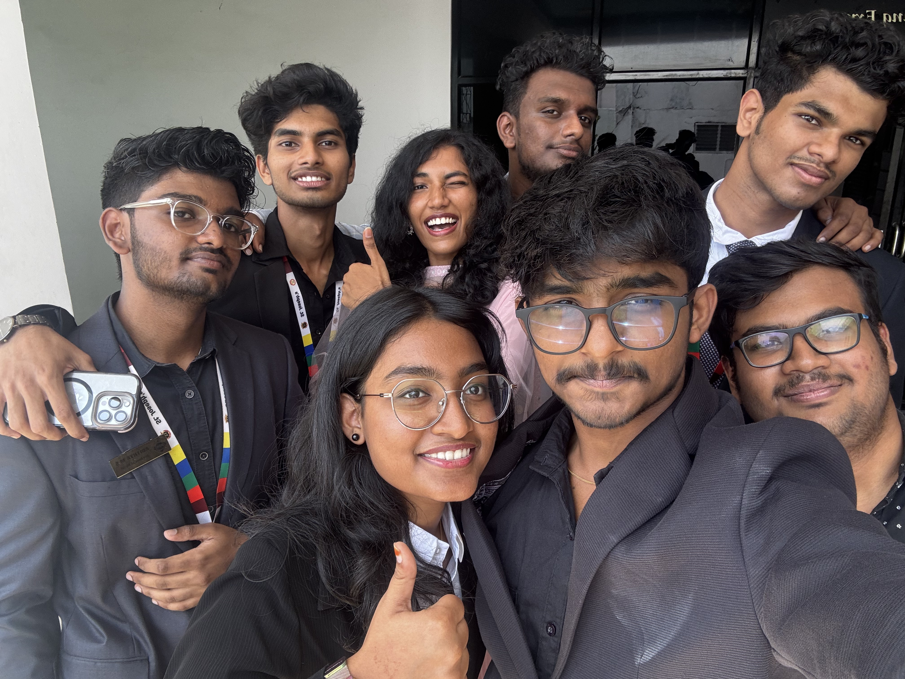
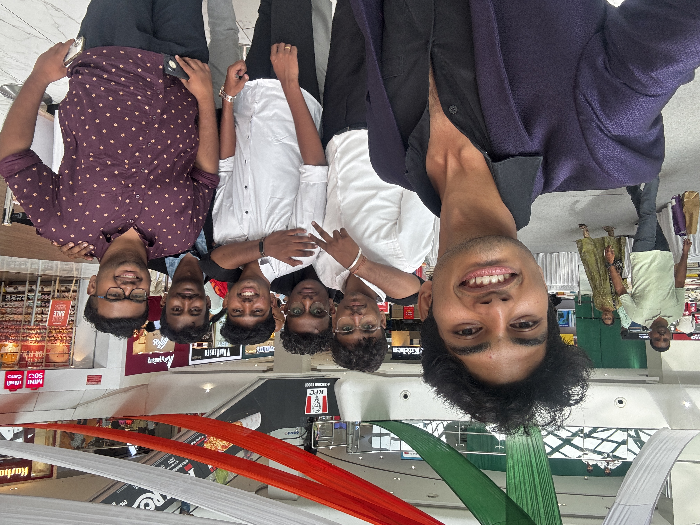
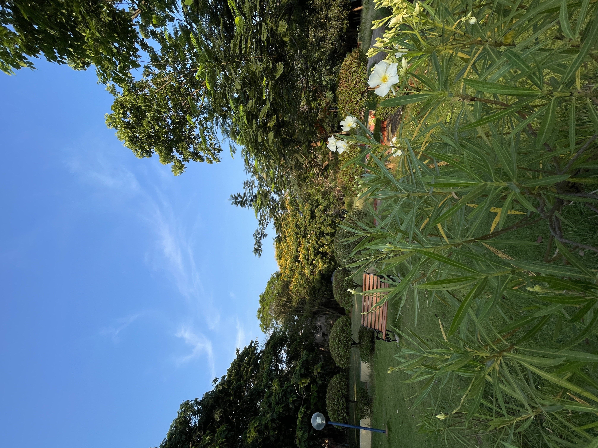
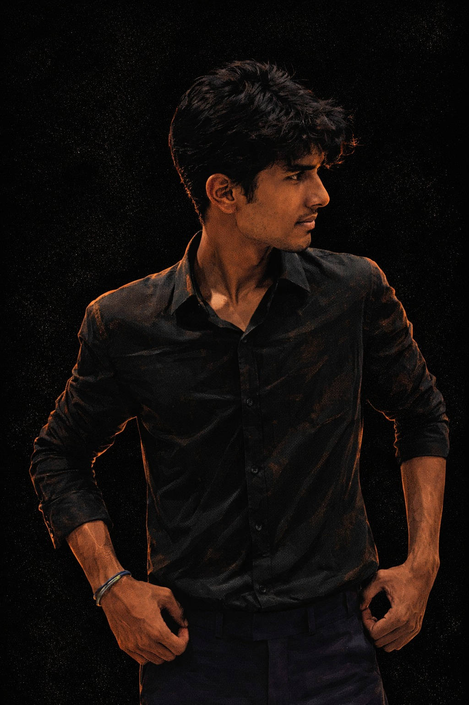
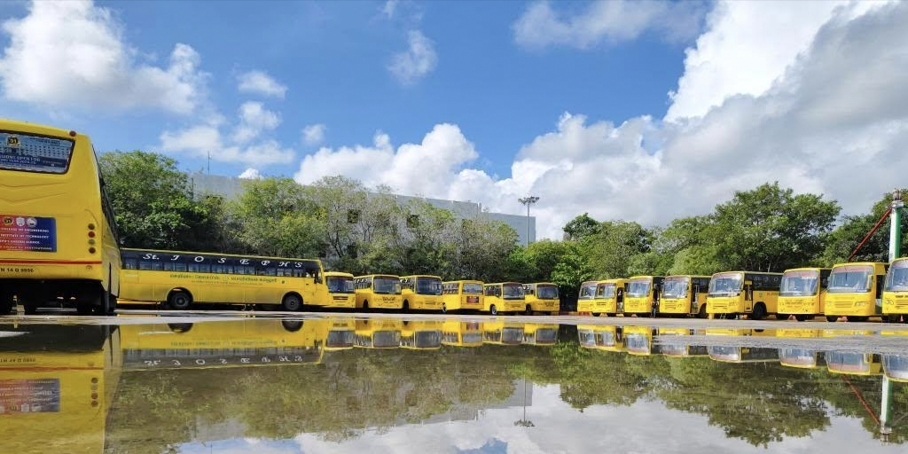
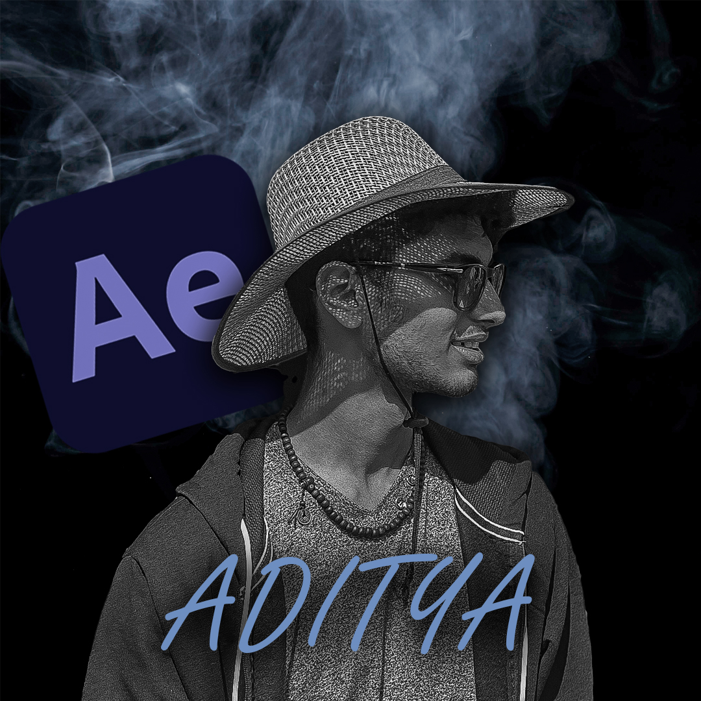
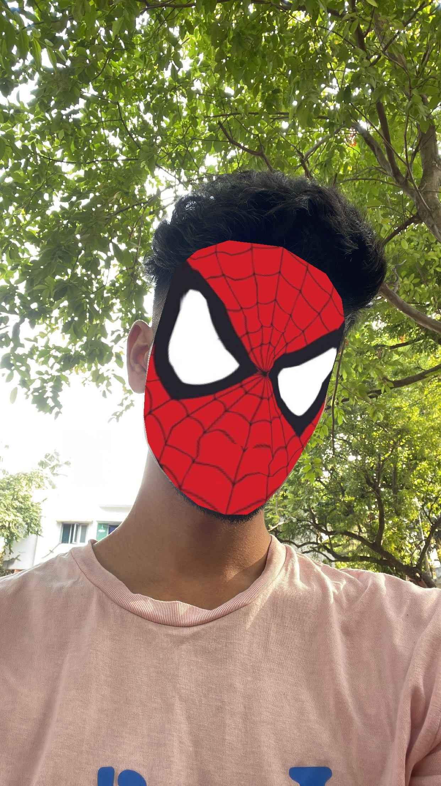

Orientation CG Lead
Led the Computer Graphics team for Orientation 2023 and 2024, returning in 2024 as a mentor and lead.
SYSTEM INITIALIZING: STAGE BLUE...
Creative Direction & Media Management
Started from birthday story edits, evolved into leading campus-wide media teams, editing 4-hour orientation films for two years, covering national expos from Madurai to IIT Bombay, and directing and running my own creative campaigns for Studio.nsr.
Catch me on the gram!A few milestones
People, projects, and moments that shaped my creative journey.
Led the Computer Graphics team for Orientation 2023 and 2024, returning in 2024 as a mentor and lead.
Managed my college's official Instagram handle and helped tell the campus story through its events and student life.
Successfully covered and completed creative media work for more than 25 events.
Represented E-Cell SJCE as part of the team at IIT Bombay's National Entrepreneurship Challenge, where we were selected as Top 7 finalists.
Delivered video edits for clients and created campaigns through my own creative studio, Studio.nsr.
Chronological Archive
A look back at the teams, events, productions, and creative work that shaped my journey.

Media Director · Full-time · Hybrid · Chennai, Tamil Nadu
Took on the dual role of Media Director and Lead Editor for Smart Femina, steering the event's visual lifecycle from its high-energy promotional campaign through post-production.
Powered Smart Femina's promotion and event media, shaping the visuals that introduced and documented the event.
Founder & Creative Lead
Founded Studio.nsr as my independent creative studio, bringing together years of event coverage, cinematic edits, and visual storytelling.

Media Manager · E-Cell SJCE
Represented E-Cell SJCE as part of our team at IIT Bombay's National Entrepreneurship Challenge. We made it from Madurai to the national finals and were selected as Top 7 finalists.

Lead Editor & Media Manager · Josephiles
Led on-ground camera coverage and edited celebration reels that captured the energy of Pongal for the official Josephiles handle.
.JPG)
E-Cell Delegate & Media Lead
Represented my college at Thamukkam Maidhaanam in Madurai, capturing the event and sharing its entrepreneurship stories through photos and reels.

CG Team Lead & Mentor · Josephiles
Mentored the new CG team, led the creative work, and produced four high-energy reels across all four days of Orientation 2024.
 & Josephiles Management.JPG)
Social Media Manager & Event Lead
Travelled to Trichy to lead on-ground visual coverage for Technofest 2024, capturing the event and sharing its moments with the campus community.
Social Media Manager · Josephiles
Maintained the college's official Instagram presence for two years, planning posts and helping document student life, events, and campus milestones.

Media Manager · E-Cell
Created the launch reel for the official E-Cell Instagram handle and led the campaign visuals and promotional content.

Creative Director & Video Editor
Led video production, promotional videography, and post-production delivery for multi-channel campaigns.

Computer Graphics Lead
Earned the CG lead role through my Instagram reels and directed the team behind the four-hour Ori'23 feature film. I returned for Orientation 2024 as a CG Team Lead and mentor.

Director & Colorist
Built an atmospheric visual story with intimate framing and expressive color grading, shaped around the emotion of Libianca's “People”.
Visual Archive
A selection of musical films, event edits, beat-synced reels, and cinematic experiments.
Emotional pacing, warm acoustic color grading, and intimate camera frames synced to the melody.

Rumbling exhaust beats mapped to cinematic frame cuts, highway golden hour light, and motor visual aesthetics.

Kinetic velocity transitions, speed ramps, and bass-heavy motion blur capturing neighborhood street energy.

Vibrant rhythm mashup blending Tamil acoustic melodies with punchy scene transitions and glowing light sweeps.

Pinpoint hyperlapse camera tracking, frame stabilization, and warp time-bends across local parkscapes.

Reintro Aditya NSR edits with heavy contrast, dark neon shadows, and impact sound hits.

A high-energy speed ramp edit celebrating our college bus and the journeys shared on campus.

An edit made from drafts that never made it to social media—now finally released for everyone to see.

A self-made Spider-Man-inspired edit imagining me as Spidey, swinging into action to save the day.
Original Music
A personal story turned into a Tamil song and released under my artist profile.
A Tamil song about a boy moving through the pain of a breakup and finding the strength to overcome the darkness and begin healing again.
Listen on Spotify ↗ Visit Artist Profile ↗Also available on Apple Music, JioSaavn, and other streaming platforms.
Unscripted conversations
Casual conversations about school days, college life, and all kinds of random things.
A relaxed podcast where I talk about the moments, memories, and everyday topics that come to mind. Tune in on Spotify.
Listen to the Podcast ↗From Instagram to YouTube
I answered the questions you sent me on Instagram in this video.
A relaxed Q&A video inspired by the questions people asked me on Instagram. Watch it on YouTube.
Watch on YouTube ↗Open for Collaborations
Available for full-scale event videography management, post-production color grading, cinematic commercial edits, and branded content direction under Studio.nsr.
✨ Direct Booking: adityaramnatarajan@gmail.com